Welcome to the Identities Page!
Gender Identities
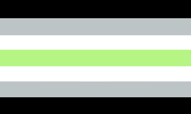
Agender: a person that has no gender and feels no connection to any genders,
regardless of their assigned gender at birth or previous gender identities.
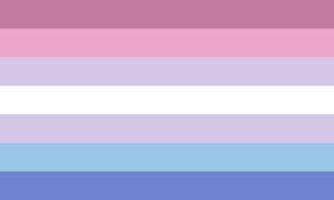
Bigender: A person whose gender identity falls between two genders. They either have two gender identities simultaneously or switch between the two. 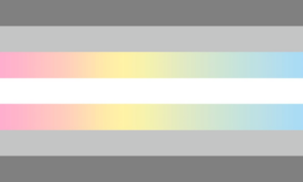
Demigender: a person that has a weak or partial connection to a certain gender (demigirl, demiboy, demiandrogyne) 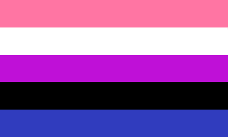
Genderfluid: a person that identifies as male, female, or nonbinary at different times or circumstances. 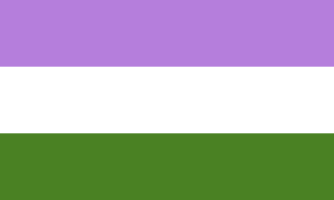
Genderqueer: A gender variant person whose gender identity is neither male nor female, is between or beyond genders, or is some combination of genders, similar to non-binary. 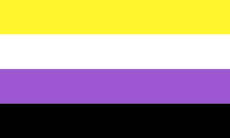
Non-binary: a spectrum of gender identies that are not exclusively masculine or feminine - identities that are outside of the gender binary, similar to genderqueer. 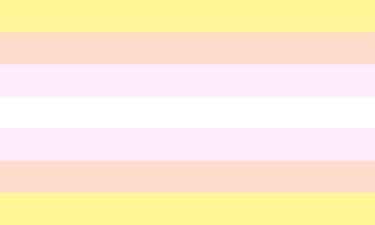
Pangender: A person whose gender identity is comprised of all or many gender expressions. 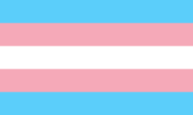
Transgender people have a gender identity or gender expression that differs from their assigned sex. Some transgender people desire medical assistance to transition from one sex to another. Transgender – often shortened as trans – is also an umbrella term: in addition to including people whose gender identity is the opposite of their assigned sex (trans men and trans women), it also includes people who are not exclusively masculine or feminine (people who are non-binary or genderqueer, including bigender, pangender, genderfluid, or agender).
Sexual and Romantic Orientations
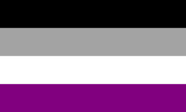

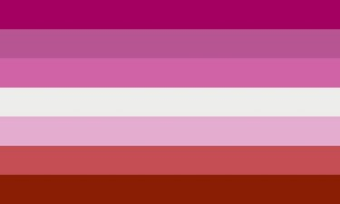
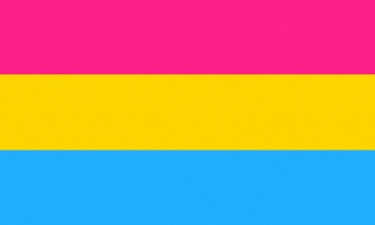
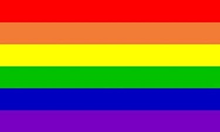